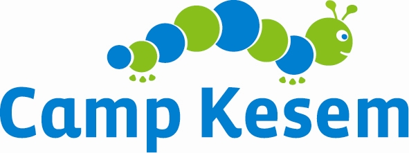

I'm a quick learner that loves hands-on projects, challenges and innovative opportunities. Since high school, working with robots has been my passion. My goal is to gain experience in hardware and software experience to better design and develop socially adept robots.
I care about the way we learn, and about how to educate the future generations through technology.
In my free time, I love sharing my love of science and engineering with younger students through community outreach through robotics and SWE!
I love exploring my surroundings -be it in a city like Boston or out a cornfield in the country. Also, I'm a total foodie, and enjoy baking and cooking new things.
~~~~~~~~~~~~~~~~

"You know, I always thought of cancer as this horrible thing that only destroyed lives.
Camp Kesem shows you that good things still happen." - Camp Kesem Camper
I'm currently fundraising for Camp Kesem (CK), an organization I truly care about that sends kids of cancer patients to a week-long summer camp, for FREE! To make this opportunity available for all 170 of our camp attendees at MIT's CK chapter this year, we need to raise $120,000! Every donation makes a difference, so please donate here! Thank you ♥
~~~~~~~~~~~~~~~~